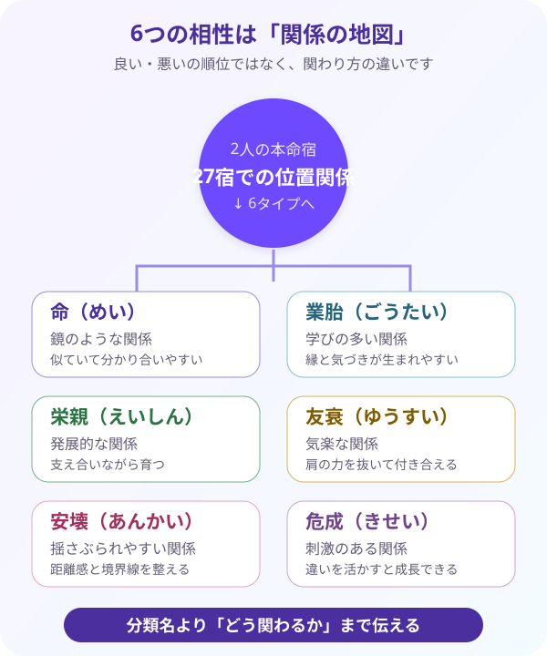

相性六分類（あいしょうろくぶんるい）を読む
2人の宿の位置関係から、6種類の関係性のタイプを読み解きます。良い・悪いでは判断しません。
相性は「良い・悪い」を決めるものではありません。2人が心地よく関わるための、関係の取扱説明書として読みましょう。
1. 相性六分類とは？
相性六分類（あいしょうろくぶんるい）は、2人の本命宿（ほんめいしゅく）が、27個の宿を並べた円の中でどのような位置関係にあるかを調べ、関係の特徴を6つのタイプへ整理する読み方です。
まず自分と相手の生年月日から、同じ旧暦二十七宿・月宿傍通暦式でそれぞれの本命宿を求めます。そのうえで、自分の宿を出発点にして相手の宿までの位置を確認します。
分類されるのは、命（めい）・業胎（ごうたい）・栄親（えいしん）・友衰（ゆうすい）・安壊（あんかい）・危成（きせい）の6タイプです。これは1位から6位までの相性ランキングではありません。それぞれに、話しやすさ、学び、刺激、距離感など、異なる関わり方の特徴があります。
相性を見る目的は、「この人とは良い」「この人とは悪い」と判決を出すことではありません。なぜ自然に話せるのか、なぜ同じところですれ違うのか、どんな距離ならお互いが楽なのかを整理するために使います。
恋愛だけでなく、親子、きょうだい、友人、職場の上司や同僚など、あらゆる人間関係に応用できます。相性六分類は、相手と心地よく関わるための「関係の取扱説明書」なのです。
昔は月の位置関係が、人間関係や行動の時期を考える手がかりとして使われました。現代では吉凶を決めるためだけでなく、性質の違いを理解し、コミュニケーションを整える実用的な道具として使うと役立ちます。
2. 6つのタイプと「優しい伝え方」
分類名には少し難しい漢字や、強く聞こえる言葉もあります。名前の印象だけで怖がらせず、関係に起きやすいこと・活かせる点・整えたい点を一緒に伝えましょう。
① 命（めい）― 鏡のような関係
同じ本命宿を持つ者同士です。感覚や反応が似ているため、言葉にしなくても分かり合えることがあります。一方で、似た弱点まで映し合い、相手の姿に自分の嫌な部分を感じることもあります。「よく似た者同士で、分かり合いやすい関係です」と伝えます。
② 業胎（ごうたい）― 学びの多い関係
不思議な縁や、人生の節目での影響を感じやすい関係です。出会いを通じて考え方が変わったり、自分だけでは気づかなかった課題が見えたりします。「学びや気づきが多く生まれやすい、縁の深い関係です」と表現します。
③ 栄親（えいしん）― 発展的な関係
お互いの力を伸ばし、支え合いやすい関係です。一緒にいることで安心感が生まれ、仕事や生活を前へ進めやすくなることがあります。支えてもらうことを当然と思わず、感謝を言葉にすることが長続きのコツです。「支え合いながら育っていける、心強い関係です」と伝えます。
④ 友衰（ゆうすい）― 気楽な関係
趣味や会話の感覚が合いやすく、肩の力を抜いて一緒にいられる関係です。楽しい時間を共有しやすい一方で、役割や気持ちの負担がどちらかへ偏っていないかを確認することも大切です。「肩の力を抜いて付き合える、心地よい関係です」と表現します。
⑤ 安壊（あんかい）― 揺さぶられやすい関係
強く惹かれたり、相手の一言に大きく影響されたりしやすい関係です。近づきすぎると衝突や疲れが生まれることもありますが、名前だけで「悪い相性」とは決めません。「揺さぶられることもある関係だからこそ、距離感や境界線を整えることが大切です」と、具体的な助言を添えます。
⑥ 危成（きせい）― 刺激のある関係
考え方や得意分野が違い、最初は理解しにくさを感じることがあります。しかし、自分にない視点を持つ相手だからこそ、役割を分けると新しい成果につながります。「違いを活かし合うことで、大きく成長できる関係です」と伝えます。
▶ 相性六分類の早見表にジャンプ ▶ 27×27相性マトリクスにジャンプ6分類には、それぞれ心地よい面と気をつけたい面があります。分類名だけで順位をつけず、「この関係では何が起きやすく、どう関わると力を活かせるか」まで読むことが大切です。

| 相性分類 | 意味 | 起きやすいこと | 伸びる点 | 注意点 | 優しい鑑定表現 |
|---|
3. 実践！相性を読み解く手順
相性を調べるときは、印象や名前だけで判断せず、決まった順番で確認します。画面の相性チェッカーを使えば計算は自動で行われるため、初心者は結果の意味と伝え方に集中できます。
① 2人の生年月日から本命宿を出す
自分と相手の生年月日を入力し、それぞれの旧暦月日と本命宿を同じ月宿傍通暦式で求めます。片方だけ別の流派や計算方法を使わないことが大切です。
② 相性マトリクスで位置関係を確認する
自分の宿のプルダウンを開き、相手の宿を選びます。表示された命・業胎・栄親・友衰・安壊・危成のどれに当たるかを確認します。
③ 実際の出来事と照らし合わせる
分類の説明を読んだら、「話が通じやすかった場面」「すれ違った場面」「お互いに助けられた場面」を思い出します。分類名を覚えるだけでなく、実際の関係へ結びつけることで理解が深まります。
④ 関わり方の提案へ変える
最後に、「だから悪い」で終わらず、2人が心地よく関わるための工夫を提案します。距離を少し置く、役割を分ける、感謝を言葉にするなど、現実に試せる行動へ変えましょう。
最初は、お母さん・家族・親友など、これまでの関係の経緯をよく知っている身近な人がおすすめです。過去の出来事と分類の特徴を照らし合わせると、「あのときは距離が近すぎたのかもしれない」と具体的に理解できます。
「この相性は最悪です」「別れた方がいい」「絶対にうまくいきません」という断定は避けます。相性は未来を決める判決ではなく、現在の関わり方を見直すヒントです。
代わりに、「性質の違いが出やすい関係です」「距離感を整えると、お互いの良さを活かしやすくなります」と、理解と行動につながる表現へ変えましょう。詳しくは巻末のNG表現集も参照してください。
自分の宿のプルダウンを開き、相手の宿をタップすれば相性が分かります。横に動かさなくていいので、スマホでも落ち着いて探せますよ。
自分の宿のプルダウンを開き、一覧から相手の宿をタップすると、その組み合わせの相性タイプが表示されます。
💞 相性チェッカー（実践ワークスペース）
2人の生年月日を入力するだけで、旧暦月日・本命宿・相性分類を自動算出し、ChatGPT用プロンプトまで即座に作ります。登録済みの自分の情報は自動で入ります。
分類名よりも、相手を怖がらせない伝え方が大切です。六分類と関係の読み方を、5問で確かめましょう。